คู่มือประกอบ 12 ขั้นตอน
ภาพส้ม = ชิ้นที่เพิ่มในขั้นนั้น ภาพเป็นเรนเดอร์จากไฟล์ STEP (ผนังอุโมงค์/กล่องในภาพเป็นอะคริลิกใส แต่ของจริงพิมพ์ทึบ) ลำดับนี้ร่างจากแบบ ยังไม่เคยประกอบจริง
ความปลอดภัย หัวแร้งฝังเกลียวใช้เมื่อมีครูดูแล · ไฟบ้านเข้าช่อง C14 กล่องซ้ายเท่านั้น ให้ครูหรือช่างไฟตรวจก่อนเสียบปลั๊ก (ยังไม่มีแผนผังสายไฟที่ช่างไฟตรวจแล้ว) · ห้ามเสียบ/ถอดสายมอเตอร์ตอนมีไฟ · ห้ามมองไฟ IR/UV ตรง ๆ
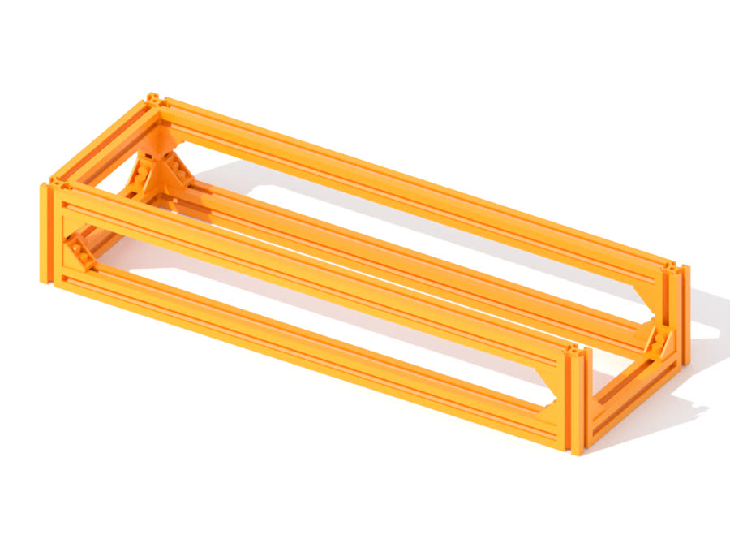
ขั้นที่ 1 โครงอะลูมิเนียม
- ตัดขาโปรไฟล์ 4 ท่อนจาก 100 มม. เหลือ 86 มม. ลบคม วัดความยาวท่อนอื่นเทียบแบบ (ราง 445 ×4, คาน 122 ×3)
- ประกอบวงล่าง: ราง 2 ท่อน + คาน 2 ท่อน (ปลายซ้าย x=0 และปลายขวา) ด้วยฉากมุมหล่อ ใส่สไลด์นัทของฉากในร่องก่อนขัน
- ตั้งขา 4 ต้นที่มุม แล้วประกอบวงบน: ราง 2 ท่อน + คาน 1 ท่อนเท่านั้นที่ปลายซ้าย (ปลายขวาเปิดไว้ให้สายพานตอนล่างผ่าน)
- รวมฉากมุม 14 ตัว ขันพอตึง วัดฉากทุกมุมและวางบนโต๊ะเรียบ ถ้าโยกให้ปรับก่อนขันแน่น
ตรวจ: โครงไม่โยก ขาสูงเท่ากันทั้ง 4 ต้น ปลายขวาด้านบนโล่ง
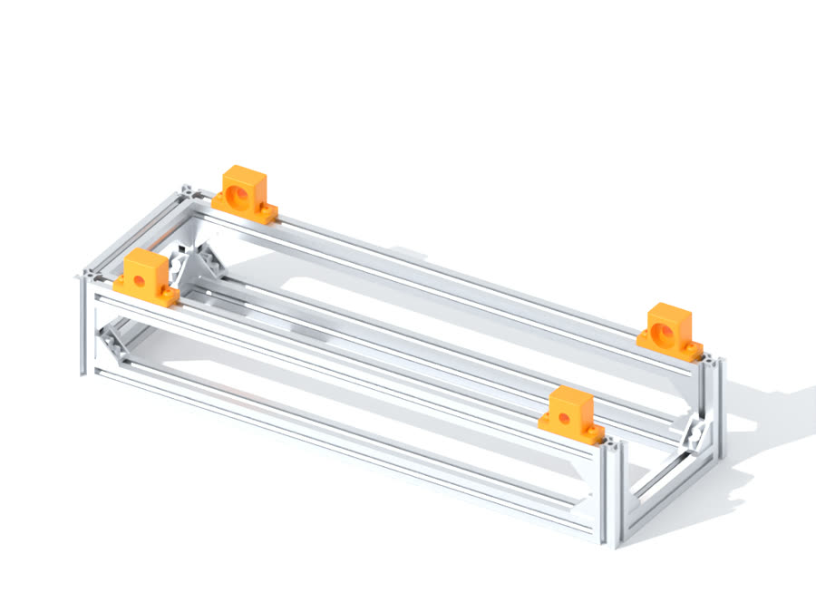
ขั้นที่ 2 ตัวจับลูกปืน
- ใส่ T-nut M5 4 คู่ในร่องรางบน (ซ้าย 2 ขวา 2 ฝั่งตาม และฝั่งขับ)
- วางตัวจับลูกปืน 4 ตัวบนรางบน ยึดด้วย M5×10 + T-nut ตัวละ 2 ชุด (รวม 8 ชุด) ตัวฝั่งตาม (ซ้ายของภาพ) มีรูสล็อตปรับได้ ±8 มม. ขันหลวมไว้ก่อน
- รูกลมใหญ่ (Ø22) หันเข้าด้านในสายพานเพื่อใส่ลูกปืน
ตรวจ: ตัวจับ 4 ตัวอยู่ระดับเดียวกัน รูเพลาตรงกันซ้าย-ขวา
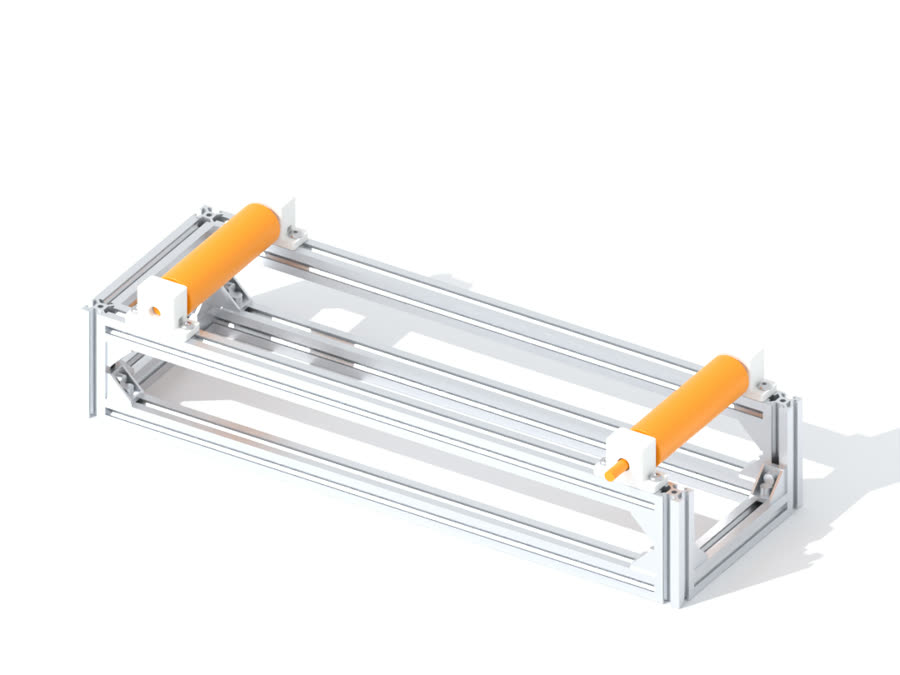
ขั้นที่ 3 ลูกกลิ้งและเพลา
- ฝังเกลียวทองเหลือง M3×4 ลงลูกกลิ้ง (2 ตัวต่อลูก) ด้วยหัวแร้ง ให้เสมอผิว รอเย็น
- กดลูกปืน 608ZZ ลงช่องในตัวจับ 4 ตัว
- สอดเพลา Ø8 ผ่านลูกปืน ลูกกลิ้ง ลูกปืนอีกฝั่ง เพลาตัวขับยื่นออกด้านซ้ายประมาณ 18 มม. เพื่อต่อคัปปลิ้ง
- ขัน grub M3×12 ผ่านเกลียวทองเหลืองกดเพลา ให้ลูกกลิ้งอยู่ตรงกลาง (เหลือขอบ 8 มม. ทั้งสองข้างสายพาน)
ตรวจ: หมุนลูกกลิ้งด้วยมือลื่น ไม่ฝืด ไม่แกว่ง
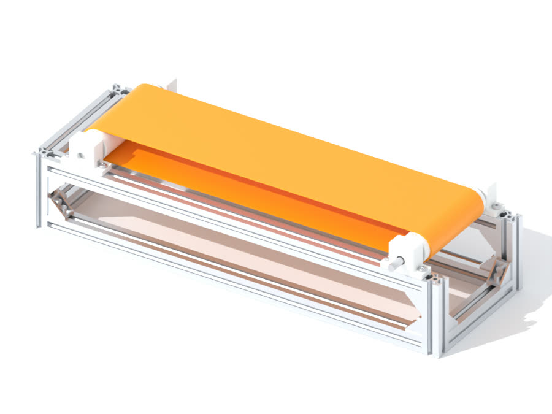
ขั้นที่ 4 สายพาน
- คลายตัวจับลูกปืนฝั่งตามเล็กน้อย
- สวมสายพานรอบลูกกลิ้งทั้งสอง ดันฝั่งตามไปทางซ้ายตามรูสล็อตให้สายพานตึงพอดี (กดกลางสายพานให้ยุบได้ประมาณ 3–5 มม. — ค่าประมาณ ปรับตามจริง)
- ขันตัวจับลูกปืนทั้งหมดให้แน่น หมุนสายพานด้วยมือ 1 รอบ ดูว่าไม่เบี้ยวไปข้างใดข้างหนึ่ง
ตรวจ: สายพานวิ่งอยู่กลางลูกกลิ้ง ไม่เสียดสีขอบตัวจับ
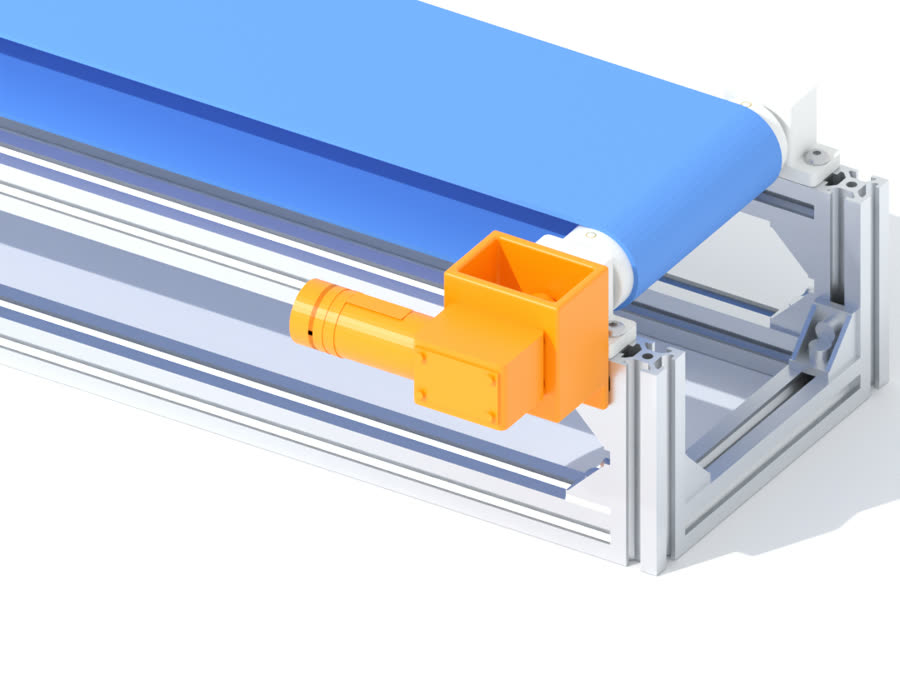
ขั้นที่ 5 มอเตอร์และคัปปลิ้ง
- วัดมอเตอร์จริง เทียบขนาดในแบบ (เกียร์ 40×30×28, เพลา D Ø6, รู M3 ระยะ 18×33) ถ้าไม่ตรงบอกครู
- ยึดขามอเตอร์ (motor_bracket) กับด้านข้างรางซ้ายด้วย M5×8 + T-nut 2 ชุด
- ยึดมอเตอร์กับขาด้วย M3×8 4 ตัว
- ต่อเพลา Ø6 ของมอเตอร์กับเพลา Ø8 ของลูกกลิ้งด้วยคัปปลิ้ง ขัน grub ของคัปปลิ้งให้ชนด้านแบนของเพลา D
ตรวจ: เพลาตรงแนว หมุนมือผ่านมอเตอร์ได้ (เกียร์หนอนฝืดเป็นปกติ)
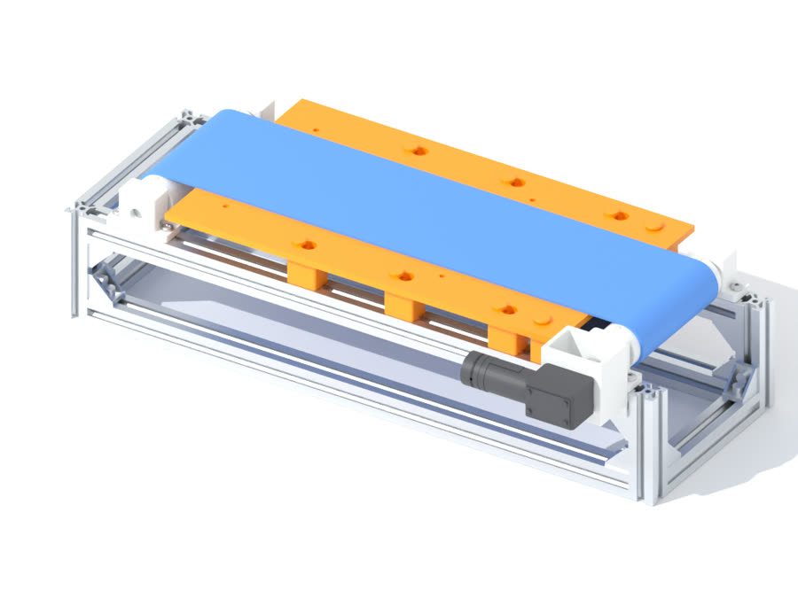
ขั้นที่ 6 แผ่นฐานรองสายพาน
- ยึดเสารอง 6 ตัว (bed_support_195, 275, 360 ซ้าย/ขวา) และเสาล็อก 2 ตัวด้วย M5×25 + T-nut ตัวละ 1 ชุด (รวม 8 ชุด)
- วางแผ่นอะคริลิก 5 มม. (323×182) ลงบนหัวสตั๊ดให้รูใหญ่ตรงหัวสตั๊ด
- เลื่อนแผ่นไปทางขวา (ฝั่งขับ) 8 มม. แล้วเสียบหมุดล็อก 2 ตัว (bed_pin)
ตรวจ: แผ่นไม่ขยับ ผิวแผ่นเสมอยอดลูกกลิ้ง สายพานไม่ติดแผ่น ถอดแผ่นได้โดยดึงหมุดแล้วเลื่อนกลับ
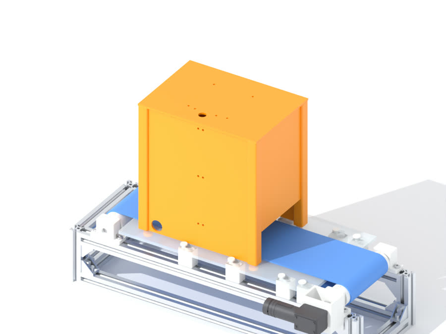
ขั้นที่ 7 โครงอุโมงค์
- ฝังเกลียวทองเหลือง M4 ที่ใต้เสาอุโมงค์ 4 ต้น (ทดลองกับ 1 ต้นก่อนว่ารูลึกพอสำหรับเกลียวยาว 6 มม.)
- ยึดเสา 4 ต้นกับแผ่นฐานด้วยสกรู M4 และลูกบิดมือหมุน
- สไลด์ผนังซ้าย ขวา หน้า หลัง ลงร่อง 3.3 มม. ในเสา ถ้าแน่นเกินอย่าตอก ให้ตะไบขอบแผ่นเล็กน้อย
- วางหลังคาด้วยแม่เหล็ก 4 คู่ (กาวติดแม่เหล็กที่หลังคาและปลายเสา)
ตรวจ: เปิดไฟห้องแล้วมองจากข้างใน แสงไม่ลอดผนัง ผนังทึบ ปิด-เปิดหลังคาได้ลื่น
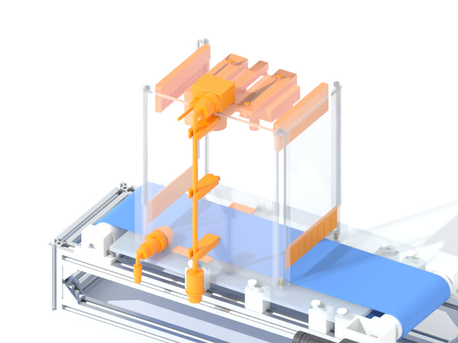
ขั้นที่ 8 กล้อง ไฟ และเซนเซอร์
- ติดรางไฟ (LED COB ในรางอลูมิเนียม) ใต้หลังคาด้วยเทป 3M PT1100 และฟิล์มโพลาไรซ์คลุมไฟ
- ใส่เว็บแคมในตลับกล้อง ติดฟิล์มโพลาไรซ์หน้าเลนส์ หมุนฟิล์มให้ตั้งฉากกับฟิล์มไฟ จนแสงสะท้อนเงาบนเนื้อน้อยที่สุด
- สอดตลับกล้องและตลับเซนเซอร์เข้าราง ยึด roof_rail ใต้หลังคาด้วย M3×6 เข้าเกลียวทองเหลือง
- ติดเซนเซอร์ E18-D80NK ที่ทางเข้าอุโมงค์ด้วยน็อต M18 2 ตัว
- วางแผ่นอ้างอิงขาว/การ์ดเทาบนแผ่นฐานตามตำแหน่งที่ออกแบบ
ตรวจ: ภาพจากกล้องเห็นชัดที่ระยะประมาณ 15 ซม. (ยังไม่ได้ทดสอบโฟกัส C270 ที่ระยะนี้)
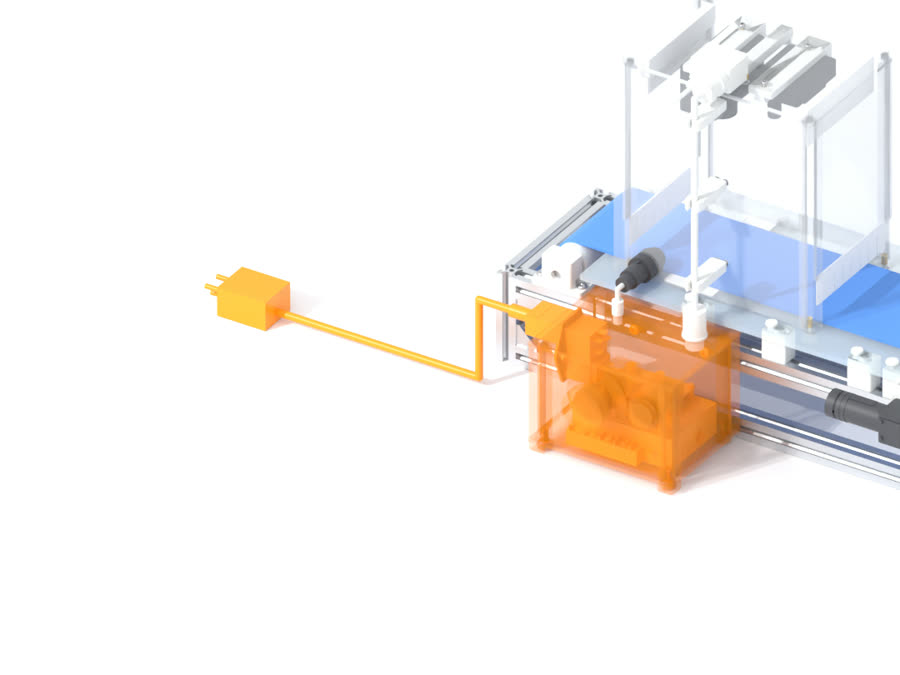
ขั้นที่ 9 กล่องควบคุมซ้าย (แหล่งจ่ายไฟ)
- ยึดขา 2 ขา กับเสา 4 ต้นด้วยลูกบิดมือหมุน วางแผ่นพื้นกล่อง
- ติดแหล่งจ่ายไฟและตัวแปลงแรงดันด้วย M3 จากใต้พื้น
- ติดช่องรับไฟ C14 ที่ผนังซ้าย ปุ่มหยุดฉุกเฉินและปุ่มสตาร์ทที่ผนังหน้า
- สไลด์ผนังลงร่อง วางฝาด้วยแม่เหล็ก 4 คู่
- ห้ามต่อสายไฟบ้านเอง รอครูหรือช่างไฟ
ตรวจ: ชิ้นไฟบ้านอยู่ในกล่องซ้ายเท่านั้น ไม่มีโลหะแตะกัน
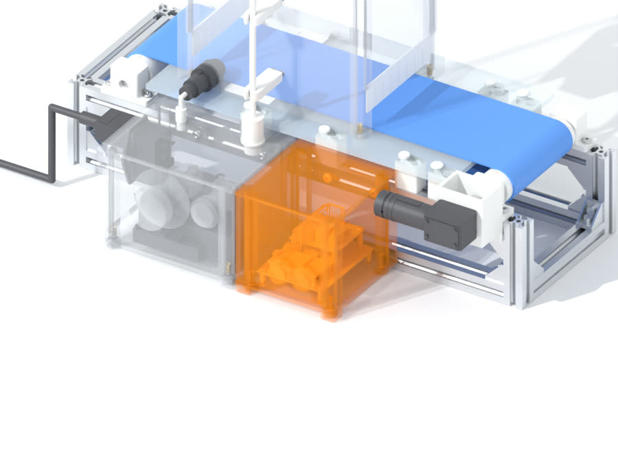
ขั้นที่ 10 กล่องควบคุมขวา (บอร์ด)
- ติดเสาทองเหลือง M3 ที่พื้นกล่อง 4 ตัว
- ยึด ESP32 และไดรเวอร์ BTS7960 บนเสาด้วย M3×6
- สไลด์ผนังและวางฝาด้วยแม่เหล็ก
ตรวจ: บอร์ดไม่แตะพื้นกล่อง ไม่มีขาโลหะสัมผัสกัน
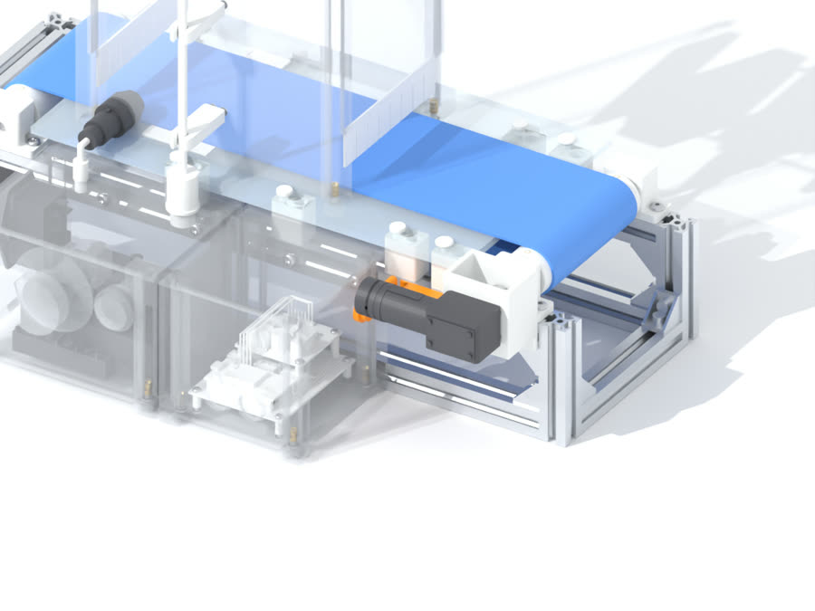
ขั้นที่ 11 สายมอเตอร์และรางสาย
- ตัด wire duct 20×20 ประมาณ 52 มม. ยึดหน้ารางโปรไฟล์ด้วย M5×6 (ใช้ M5×8 แทน) + T-nut
- ร้อยสายมอเตอร์ผ่านรางเข้ากล่องขวา ด้วยแกลนด์ M12/M16 ตามช่อง
- ติดแขนจับสายพิมพ์ (cable_arm) ตามผนังอุโมงค์ ใช้เคเบิลไทร์
ตรวจ: สายไม่สัมผัสสายพานหรือลูกกลิ้ง ดึงเบาๆ แล้วไม่หลุด
ทีมผู้จัดทำ: นายก้องภพ วาทปราชญ์ · นายปรัชกรณ์ ภิมุกภักดี · นายประกฤษฎิ์ ศรีเบญจบุตร (ม.5/2) · ครูที่ปรึกษา ครูสายสุดา เรืองซา